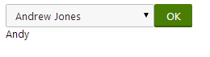

UniSelector
The UniSelector is a user control that provides an interface for selecting items. The source of the selectable items is a list of objects of a specified data class, such as users, sites, page types, etc. The control supports several different selection modes and extensive customization options. You can find examples of the UniSelector in the Kentico administration interface.
The UniSelector is optimized to handle very large amounts of objects, so it has greater performance and scalability than standard selection controls, such as the DropDownList.
Note: Using the UniSelector control beyond its most basic functions requires some knowledge of coding and Kentico API. When a user selects an item, the control only stores the values of the selected object internally. Any additional functionality, such as database changes, must be implemented in the handlers of the control's events or using the Click event of a Button control used for confirmation.
Getting started
The following is a step-by-step tutorial that shows how to use the UniSelector to select users from the system and perform a basic task with the selected user:
Create a new Web form named User_UniSelector.aspx in your web project.
Register the UniSelector control by adding the following directive to the beginning of the page code:
<%@ Register src="~/CMSAdminControls/UI/UniSelector/UniSelector.ascx"tagname="UniSelector"tagprefix="cms"%>Add the following code into the content area of the page (inside the <form> element):
<divclass="cms-bootstrap"><asp:ScriptManager ID="manScript"runat="server"ScriptMode="Release"EnableViewState="false"/><table><tr><td><cms:UniSelector ID="UserSelector"runat="server"ObjectType="cms.user"SelectionMode="SingleDropDownList"ReturnColumnName="UserName"/></td><td><asp:Button runat="server"ID="OKButton"onclick="OKButton_Click"CssClass="btn btn-primary"Text="OK"/></td></tr><tr><td><asp:Label runat="server"ID="lblButton"Visible="false"/></td></tr></table></div>The ScriptManager control is required by the UniSelector control. The sample code manually adds the script manager to be functional as a standalone example. The ScriptManager is typically included on your website's master page, so you do not need to add it in real-world scenarios.
The UniSelector control is configured to allow the selection of user objects from a drop‑down list and to use the content of the UserName column in its value. See the Properties section for more information about the control's properties.
The code also contains a Button and Label control, organized in a basic table layout, are used to demonstrate how to perform a basic task with the value of the UniSelector.
The cms-bootstrap class is required if you wish to use the default UniSelector styles.
Switch to the code behind of the web form (User_UniSelector.aspx.cs) and add the following code:
Note: Adjust the name of the class according to the location of your web form.
usingCMS.Base.Web.UI;usingCMS.Helpers;publicpartialclassUniSelectorExample_User_UniSelector : System.Web.UI.Page{protectedvoidPage_Load(objectsender, EventArgs e){// Registers the default CSS and JavaScript files onto the page (used to style the UniSelector)CssRegistration.RegisterBootstrap(Page);ScriptHelper.RegisterBootstrapScripts(Page);}/// <summary>/// Handles the Click event of the submit button./// </summary>protectedvoidOKButton_Click(objectsender, EventArgs e){// Assigns the value of the UniSelector control to be displayed by the LabellblButton.Visible =true;lblButton.Text = ValidationHelper.GetString(UserSelector.Value,null);}}This code displays the user name of the selected user when the button on the page is clicked. The code also works if you switch the UniSelector to a SelectionMode that allows the selection of multiple users — the user names are all displayed separated by semicolons.
This example only serves as a demonstration and the selection has no permanent effect. You can implement any required functionality, such as changes in the database, using the Kentico API.
An alternative way to work with the selected values is to use handlers of the UniSelector's events.
Save the web form and its code behind file.
Right-click the web form in the Solution explorer and select View in Browser.
The resulting page displays a drop‑down list containing user names and an OK button. If you select a user and click the button, the page displays the corresponding user name below.

Properties
You can set the following properties for the UniSelector control:
|
Property name |
Description |
Sample value |
|
AdditionalColumns |
Sets the names of the database columns that the UniSelector loads with the objects of the specified data class in addition to the columns required by default. |
|
|
AdditionalSearchColumns |
May be used to expand the search functionality in the object selection dialog. The columns specified through this property are included in the search in addition to the display name column of the given type of object. Enter the column names separated by commas. |
"UserName, Email"; |
|
AllowAll |
Indicates whether the selector offers the all value. |
|
|
AllowEditTextBox |
Indicates whether users can edit the value of the text box displayed in SingleTextBox or MultipleTextBox SelectionMode. |
|
|
AllowEmpty |
Indicates whether the selector allows empty values. If enabled, the (none) value is available in SingleDropDownList SelectionMode and the Clear button is displayed in SingleTextBox and MultipleTextBox mode. When an empty value is used, the default Value of the control is:
|
|
|
AllRecordValue |
Contains the value used when the (all) item is selected in SingleDropDownList SelectionMode. The default value is -1. |
|
|
ButtonImage |
Sets the path of an image. If specified, the control displays the selection button as a LinkButton using this image. Only applies if the SelectionMode is SingleButton or MultipleButton. |
"~/App_Themes/Default/Images/SampleImage.png" |
|
DialogWindowHeight |
Sets the default height of the selection window. |
|
|
DialogWindowName |
Specifies the name of the selection window to prevent conflicts between multiple UniSelector controls. |
|
|
DialogWindowWidth |
Sets the default width of the selection window. |
|
|
DisplayNameFormat |
Modifies the format of the display names of objects in the selection list. To correctly display values of objects, use macro expressions in format {%ColumnName%}. The control automatically loads the columns required by the macros. |
"{%FullName%}, {%Email%}" |
|
EditItemPageUrl |
Specifies the URL of a custom page that handles the editing of the selected object. If a value is entered, the control displays an edit button that links to the specified URL. Only available for SingleTextBox and SingleDropDownList SelectionMode. The URL may contain macros in format ##<ITEM>ID##, which are resolved into the value of the selected object's ID column. For example, <url>?userid=##USERID## contains the ID of the currently selected user for a UniSelector set to use the cms.user ObjectType. |
|
|
EditWindowName |
Specifies the name of the object editing window to prevent conflicts between multiple UniSelector controls. |
|
|
EmptyReplacement |
Sets a string that the control displays in the selection list as a replacement value for objects whose display name column is empty. |
"N/A" |
|
Enabled |
Indicates whether the control is enabled. |
|
|
EnabledColumnName |
Specifies the name of the column that determines if the selected object is enabled. |
|
|
FilterControl |
Path to the filter control (.ascx file; must inherit from the CMSAbstractBaseFilterControl class) that the UniSelector uses for custom filtering in the selection window. |
"~/CMSFormControls/Filters/CustomFilter.ascx" |
|
GridName |
Path to the XML configuration file of the UniGrid control used to display and select objects in Multiple SelectionMode. When using UniGrid together with UniSelector, do not specify the objecttype element in the UnigGrid's configuration file. Configuring an additional data source in the UniGrid configuration file may cause undesirable behavior and lead to errors. |
|
|
IconPath |
Sets the path to the image used in the title of the selection window. |
|
|
ItemsPerPage |
Sets the maximum amount of displayed selected items per page in Multiple SelectionMode. |
|
|
LocalizeItems |
Indicates whether the control resolves localization expressions (macros). |
|
|
MaxDisplayedItems |
Sets the maximum amount of items displayed in the list when the SelectionMode is SingleDropDownList, if the number of selectable objects is higher than the value of the MaxDisplayedTotalItems property. Users can select the remaining objects in a dialog that can be opened through the (more items...) option. The default value is 25. You can set a default value globally for all UniSelectors in your project through the CMSSelectorMaxDisplayedItems key in the <appSettings> section of your web.config. |
|
|
MaxDisplayedTotalItems |
If the total number of selectable objects is lower than the value of this property, all of them are available in the list in SingleDropDownList SelectionMode. If there are more items, the length of the list matches the value of the MaxDisplayedItems property and the (more items...) option is included. The default value is 50. You can set a default value globally for all UniSelectors in your project through the CMSSelectorMaxDisplayedTotalItems key in the <appSettings> section of your web.config. |
|
|
NewItemPageUrl |
Specifies the URL of a custom page that handles the creation of new objects. If a value is entered, the control displays a new button that links to the specified URL. Only available for SingleTextBox SelectionMode. |
|
|
NoneRecordValue |
Contains the value used when the (none) item is selected in SingleDropDownList SelectionMode. The default value is 0. |
|
|
ObjectType |
Specifies the type of the objects available for selection. Enter the appropriate object type value. To find the value for specific object types, open the System application in the Kentico administration interface and select the Object types tab. |
"cms.user" |
|
OrderBy |
Contains the ORDER BY clause that determines the order of objects. Also affects the order in the selection window. |
|
|
RemoveConfirmation |
Specifies the text of the confirmation message displayed when removing selected items from the UniSelector. Entering an empty string disables the confirmation message. |
|
|
ResourcePrefix |
Determines the prefix added to the full names of resource strings containing the labels of the various interface elements displayed by the UniSelector. Allows you to assign custom strings to the control. You can create custom strings in the Kentico administration using the Localization application. The keys of these strings must use the following format: <ResourcePrefix>.general.<string name> The UniSelector uses the following string names:
|
"mycustom" |
|
ReturnColumnName |
Specifies the name of the column used for the values of selected objects by the UniSelector. If empty, the ID column is used. To ensure correct functionality of the control, the column must be a unique identifier for the given object type. |
|
|
SelectionMode |
Determines the type of the selection dialog displayed by the control. The value of this property affects the behavior of many of the other properties of the UniSelector control. The following modes are available:
|
"SingleTextBox" |
|
SpecialFields |
Gets or sets a two dimensional string array that contains custom items displayed in SingleDropDownList SelectionMode. The first value in the array is the name of the item in the list, the second represents the value of that item when it is selected. |
|
|
UseDefaultNameFilter |
Indicates whether the selection window uses the default name filter. Allows you to disable the default filter if a custom filter is specified through the FilterControl property. |
|
|
Value |
Gets or sets the value of the object selected in the UniSelector. The control loads the value from the column specified in the ReturnColumnName property. |
|
|
ValuesSeparator |
Specifies the character used to separate selected values in the case of multiple selection. Must be a single character. The default separator is a semicolon (" ; "). |
|
|
WhereCondition |
Contains the WHERE clause of the SQL query that loads the list of objects available for selection. |
|
|
ZeroRowsText |
Specifies the text displayed when no objects are selected in Multiple SelectionMode. |
|
Events
You can handle the following events in the UniSelector's life cycle:
|
Event name |
Description |
|
OnItemsSelected |
Occurs when users select objects in SingleButton and MultipleButton Selection Mode. This event is not raised in other modes. |
|
OnSelectionChanged |
Occurs when the set of selected objects is changed. The event is not raised in SingleButton or MultipleButton SelectionMode and may not always be triggered in TextBox modes depending on how the selection is changed. You can use this event to perform tasks with selected objects in Multiple mode without using a confirmation button. |